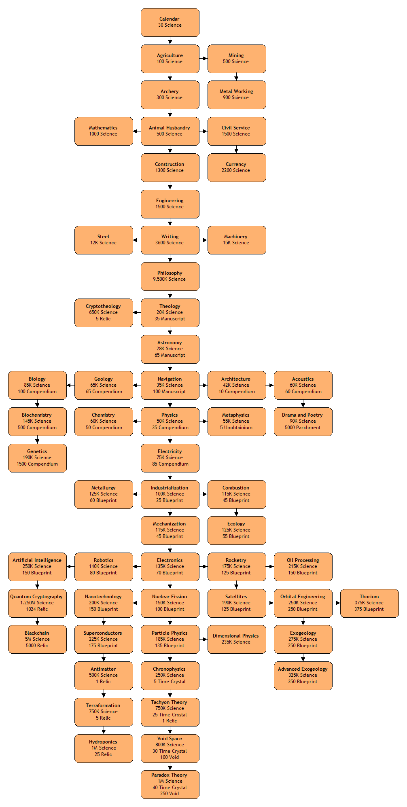

---
config:
flowchart:
defaultRenderer: "elk"
---
flowchart TD
calendar["`[Calendar]( /techs/calendar/) 30 science`"]
agriculture["`[Agriculture]( /techs/agriculture/) 100 science`"]
mining["`[Mining]( /techs/mining/) 500 Science`"]
metal_working["`[Metal Working]( /techs/metal_working/) 900 Science`"]
archery["`[Archery]( /techs/archery/) 300 science`"]
animal["`[Animal Husbandry]( /techs/animal_husbandry/) 500 science`"]
math["`[Mathematics]( /techs/mathematics/)<br> 1000 science`"]
civil["`[Civil Service]( /techs/civil_service/)<br> 1500 science`"]
currency["`[Currency]( /techs/currency/)<br> 2200 science`"]
construction["`[Construction]( /techs/construction/)<br> 1300 science`"]
engineering["`[Engineering]( /techs/engineering/)<br> 1500 science`"]
writing["`[Writing]( /techs/writing/)<br>1500 science`"]
steel["`[Steel]( /craft/steel/)<br> 1500 science`"]
machinery["`[Machinery]( /techs/machinery/) <br>00 science`"]
Philosophy["`[Philosophy]( /techs/philosophy/)<br> 00 science`"]
Theology["`[Theology]( /techs/theology/)<br> 00 science`"]
CryptoTheology["`[CryptoTheology]( /techs/cryptotheology/)<br> 00 science`"]
Astronomy["`[Astronomy]( /techs/astronomy/)<br> 00 science`"]
Navigation["`[Navigation]( /techs/navigation/)<br> 00 science`"]
Geology["`[Geology]( /techs/geology/)<br> 00 science`"]
Biology["`[Biology]( /techs/biology/)<br> 00 science`"]
BioChemistry["`[BioChemistry]( /techs/biochemistry/)<br> 00 science`"]
Genetics["`[Genetics]( /techs/genetics/)<br> 00 science`"]
Architecture["`[Architecture]( /techs/architecture/)<br> 00 science`"]
Acoustics["`[Acoustics]( /techs/acoustics/)<br> 00 science`"]
Drama["`[Drama and Poetry]( /techs/drama_and_poetry/)<br> 00 science`"]
Physics["`[Physics]( /techs/physics/)<br> 00 science`"]
Electricity["`[Electricity]( /techs/electricity/)<br> 00 science`"]
Industrialization["`[Industrialization]( /techs/industrialization/)<br> 00 science`"]
Metallurgy["`[Metallurgy]( /techs/metallurgy/)<br> 00 science`"]
Combustion["`[Combustion]( /techs/combustion/)<br> 00 science`"]
Ecology["`[Ecology]( /techs/ecology/)<br> 00 science`"]
Mechanization["`[Mechanization]( /techs/mechanization/)<br> 00 science`"]
calendar --> agriculture
agriculture --> mining --> metal_working
agriculture-->archery
archery-->animal
animal-->math
animal-->construction--> engineering-->writing
animal-->civil-->currency
writing-->steel
writing-->machinery
writing-->Philosophy
Philosophy-->Theology-->CryptoTheology
Theology-->Astronomy-->Navigation
Navigation-->Physics-->Electricity-->Industrialization-->Mechanization
Navigation-->Geology-->Biology-->BioChemistry-->Genetics
Navigation-->Architecture-->Acoustics-->Drama
Industrialization-->Metallurgy
Industrialization-->Combustion-->Ecology
Industrialization-->Mechanization-->Electronics
Electronics-->Robotics-->AI-->Quantum_crypto-->BlackChain
Electronics-->Rocketry-->OilProcessing
Rocketry-->Satellites-->Orbital_Engineering-->Thorium
Orbital_Engineering-->ExoGeology-->Advanced_exoGeology
Electronics-->Nuclear_Fission-->NanoTechnology-->SuperConductors-->Antimatter-->TerraFormation-->Hyrdoponics
Nuclear_Fission-->Particle_physics-->Chronophysics-->TachyonTheory-->VoidSpace-->ParadoxTheory
Particle_physics-->DimensionalPhysics
Source: techs.png
Image /techs.png
